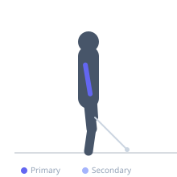

Exercise guide / Cable Overhead Tricep Extension
Cable Overhead Tricep Extension
The cable overhead tricep extension is performed with a cable machine set to the high position and the rope pulled overhead, then the elbows bent to lower the attachment behind the head. With the shoulder in flexion, the long head of the triceps is placed under maximum stretch, making this variation particularly effective for developing the long head bulk that gives the arm its thickness from the rear view.
Primary muscles
triceps long head
Secondary muscles
triceps lateral head
triceps medial head
Stabilizers
supraspinatus
transverse abdominis
Equipment
Cable Machine (High Pulley)
Optional
Cable Machine (Dual Pulley / Functional Trainer)


Starting position
- Attach a rope to the high pulley. Grip the rope ends, turn to face away from the machine, and hold the rope behind the head with elbows bent and pointing toward the ceiling. Stand in a split stance for stability.
Setup
- Set the cable pulley to the highest position. Attach a rope. Grip ends, face away from the cable stack, and position rope behind the neck/head before starting.
Steps
- Step 1: Face away from the high pulley, holding the rope ends behind the head with elbows pointing up.
- Step 2: Begin with elbows fully bent, feeling the long head of the triceps stretched.
- Step 3: Exhale and extend the elbows overhead, pushing the rope ends apart slightly as you extend.
- Step 4: Fully extend the arms, hold for a moment, then inhale and return to the bent position.
Coaching cues
- Elbows point to the ceiling — not outward
- Feel the deep stretch in the back of the arm at the bottom before pressing up
Breathing
- Exhale on extension; inhale on the return.
Range of motion
- Full elbow bend (deep stretch of long head) to full elbow extension overhead.
Tempo
- 2-1-2-0
Common mistakes
- Letting the elbows flare wide — keep them pointing relatively forward/upward
- Using the shoulders to lift rather than extending the elbows
Safety
- If discomfort is felt at the shoulder during the stretch position, reduce range of motion
- Keep the core braced to avoid lower back arching during the overhead position
Training
- hypertrophy: 10–15 reps
- endurance: 15–20 reps
- hypertrophy: 3–4 sets
- endurance: 2–3 sets
- Rest: {'hypertrophy': 60, 'endurance': 45}